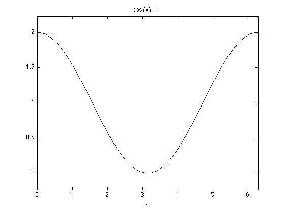

Plotting in Matlab
A.J. Melhus, 4-18-10; Revised by C. Chen, 2-17-12
Contents
Using ezplot command
Use ezplot if you have a simple function and want a plot very quickly.
Syntax: ezplot(f)
- plots a function f over default domain [-2pi, 2pi] - f can be symbolic, vector, or string - automatically displays title f and independent variable x on figure
Or, you can also use ezplot(f, [xmin,xmax]) to plot a function f over the given domain [xmin, xmax]
To try, clear figure space first:
figure(1); clf;
Let's plot y = x^2 over [-2pi, 2pi]:
ezplot('x^2')
Or we can plot f = cos(x) + 1 over [0, 2pi]
f = 'cos(x)+1'
f = cos(x)+1
(Note that this command is different with the command f = cos(x)+1. You can try to figure out what's the difference!)
ezplot(f, [0, 2*pi])
Using plot command
plot is a much more robust plotting tool. The basic syntax is plot(x,y):
- x and y are vectors containing the data you wish to plot - x and y must be of same length and type
To try, we should set up x and y first. Let's define a vector from 0 to 2pi, using the default stepsize of 1:
x1 = 0:2*pi
x1 =
0 1 2 3 4 5 6
Then we can assign values to y1 based on x1:
y1 = sin(x1)
y1 =
0 0.8415 0.9093 0.1411 -0.7568 -0.9589 -0.2794
(See what's the difference between this command and y1 = 'sin(x1)'?)
Then we can plot the sine function:
plot(x1,y1)
THIS PLOT LOOKS BAD because x1 only contains 7 points (we need more points to make a smooth graph).
Using linspace command
Let's use linspace to make a much more smooth graph by creating a vector from 0 to 2pi containing 100 linearly spaced points:
x2 = linspace(0, 2*pi); y2 = sin(x2); plot(x2,y2)
THIS PLOT LOOKS GOOD because x2 contains many more points, creating a smoother graph.
Plot aesthetics
(taken/edited from http://www.engin.umich.edu/group/ctm/extras/plot.html )
The color and point marker can be changed on a plot by adding a third parameter (in single quotes) to the plot command: plot(x,y, 'aesthetic')
- aesthetic consists of one to three characters which specify a color and/or point marker type - color and point marker types include:
| y | yellow | . | point |
| m | magenta | o | circle |
| c | cyan | x | x-mark |
| r | red | + | plus |
| g | green | - | solid |
| b | blue | * | star |
| w | white | : | dotted |
| k | black | -. | dashdot |
| -- | dashed |
For example, to plot y2 as a red, dotted line instead of the default blue straight line, the command should be changed to:
plot(x2,y2, 'r:')
title and labels
Whenever you make a plot, don't forget to properly label the x- and y-axis by using xlabel and ylabel:
plot(x2, y2) xlabel('variable x') ylabel('sin(x)')

Also, it's nice to give your plot a title so everyone can understand immediately what's the figure about:
title('sine function')
Note that the title and axis labels will be erased when you call plot again without using hold on.